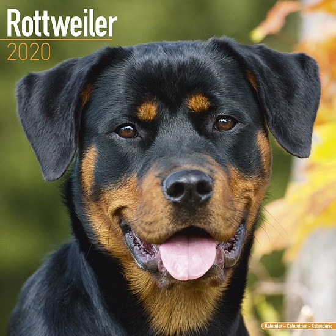

Rottweiler
Weight: 50 – 60kg
Coat: Double-coated, short, hard and thick
Color: Black and tan or black and mahogany
The Rottweiler is a breed of domestic dog, regarded as medium-to-large or large. The dogs were known in German as Rottweiler Metzgerhund, meaning Rottweil butchers' dogs, because their main use was to herd livestock and pull carts laden with butchered meat to market. This continued until the mid-19th century when railways replaced droving. Although still used to herd stock in many parts of the world, Rottweilers are now also used as search and rescue dogs, as guard dogs, and as police dogs.